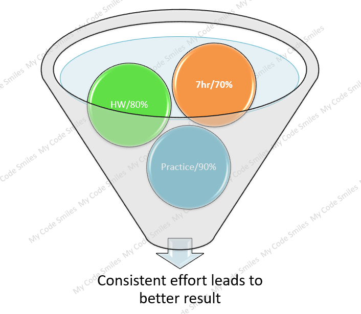

In machine learning and pattern recognition, a hypothesis is a proposed explanation for a set of observations
or data. A hypothesis is usually represented as a mathematical model that maps inputs to outputs and is used
to make predictions about the outputs for new inputs.
A most specific hypothesis is a hypothesis that makes the fewest assumptions about the data and only
covers the instances in the data that are strictly necessary. It is the simplest and most restrictive
hypothesis that still accurately explains the data.
For example, in binary classification problems, a most specific hypothesis might be a model that always
predicts the negative class (e.g., "not likely to purchase a product"). This hypothesis is considered most
specific because it makes the fewest assumptions about the data and only covers the instances that are
definitely negative, while ignoring any instances that may be ambiguous or uncertain.
A most generic hypothesis is a hypothesis that makes the most assumptions about the data and covers
all possible instances. It is the most complex and permissive hypothesis that explains the data.
For example, in binary classification problems, a most generic hypothesis might be a model that always
predicts the positive class (e.g., "likely to purchase a product") for all inputs. This hypothesis is
considered most generic because it makes the most assumptions about the data and covers all possible
instances, including those that may be ambiguous or uncertain.
The concept of the most specific hypothesis is used in the version space algorithm, which is
a method for searching for the most accurate hypothesis from a set of possible hypotheses. The algorithm
starts with the most specific hypothesis and gradually expands it to cover more instances in the
data until it reaches the most general hypothesis that still accurately covers all of the data.
What we need
What is algorithm
An algorithm is a set of instructions or rules that define a sequence of steps to solve a specific
problem or perform a particular task. It is a step-by-step procedure that takes an input and produces an
output, with the goal of solving a particular computational problem.
Algorithms can be expressed in various forms, including natural language, pseudocode, flowcharts, and
programming languages. They are used in a wide variety of fields, including computer science,
mathematics, engineering, and many others.
In computer science, algorithms play a central role in the design and analysis of computer programs.
They are used to solve various types of problems, such as searching and sorting data, finding the
shortest path in a network, analyzing complex data structures, and many others.
The efficiency of an algorithm is often measured in terms of its time and space complexity, which
refer
to the amount of time and memory required to execute the algorithm as the size of the input data grows
Approximation algorithms provide a way to find a solution that is guaranteed to be within a certain
range or factor of the optimal solution.
Find S-Algorithm (most specific hypothesis)
The Find-S algorithm is a machine learning algorithm that is used for finding a consistent hypothesis,
also known as the most specific hypothesis, in a hypothesis space. The algorithm is designed to work
with the version space representation of a hypothesis space, which is a set of hypotheses that are
consistent with the available training data.
The Find-S algorithm starts with an initial hypothesis that is the most specific hypothesis in the
hypothesis space, and then iteratively refines the hypothesis by adding generic to it. The
algorithm
stops when it finds the first hypothesis in the version space that is consistent with all the training
examples.
This algorithm consider only positive examples.
The Find-S algorithm is commonly used in the context of inductive learning, where the goal is to learn a
generalization of a set of training examples. The algorithm is considered to be a simple and
straightforward approach to hypothesis generation and is used as a basis for more complex machine
learning algorithms such as decision trees and artificial neural networks.
Find S-Algorithm (Most specific hypothesis to Most generic Hypothesis)
Find S-Algorithm work on 3 steps
Step1: Initialize the most specific hypothesis for all the give attributes
that is -> (ɸ, ɸ, ɸ, ɸ, ɸ, ɸ)
Fill the attributes for the 1st +ve case
Step2: Comparison happen for each attributes separately.
For each +ve value
if (new value = hypothesis value)
No action (=>Ignore)
else
Replace with the most general hypothesis
that is ->(?, ?, ?, ?, ?, ?)
End if
| Sr# | Origin | Manufacture | Color | Year | Type | Class |
|---|---|---|---|---|---|---|
| 1 | Japan | Honda | red | 1980 | Eco | Yes |
| 2 | Japan | Toyata | Blue | 1970 | Sport | No |
| 3 | Japan | Toyata | red | 1990 | Eco | Yes |
| 4 | India | Audi | Blue | 1980 | Eco | No |
| 5 | Japan | Honda | White | 1980 | Eco | Yes |
| 6 | Japan | Toyata | Green | 1980 | Eco | Yes |
| 7 | Japan | Honda | Blue | 1980 | Eco | No |
| 8 | USA | Audi | Yellow | 1970 | Sport | No |
H0 = (ɸ, ɸ, ɸ, ɸ, ɸ, ɸ) ->
H1 = (Japan, Honda, Red, 1980, Eco )
H2 = Since the outcome is ->ve(The result is not in favor) we will skill this hypothesis
H3 = (Japan, ? , Red , ? , Eco )
H4 = Since the outcome is ->ve(The result is not in favor) we will skill this hypothesis
H5 = (Japan, ? , ? , ? , Eco )
H6 = (Japan, ? , ? , ? , Eco )
H7 & H8 = Since the outcome is ->ve(The result is not in favor) we will skill this hypothesis
Final - > (Japan, ? , ? , ? , Eco ) - General Hypothesis
Find S-Algorithm Implementation issues
1.There is no way to determine if the hypothesis is consistent throughout the data.
2.Inconsistent training sets can actually mislead the Find-S algorithm, since it ignores the negative
examples.
3.Find-S algorithm does not provide a backtracking technique to determine the best possible changes that
could be done to improve the resulting hypothesis.
Find S-Algorithm Implementation


Use Case of Find-S algorithm
Concept Learning in Structured Environments :
1.In a controlled agricultural study, you might want to find the specific weather conditions that lead
to a successful crop yield.
Educational and Demonstrative Purposes:
2.The Find-S algorithm is often used in educational contexts to introduce basic
concepts of machine learning, such as hypothesis space, generalization, and specialization.
Learning in Controlled Domains:
3.In a medical diagnosis scenario where certain symptoms always lead to a specific diagnosis, Find-S can
help identify the specific combination of symptoms that indicate a particular disease.
Exploratory Data Analysis :
4. In market research, you might use Find-S to determine the most specific set of customer attributes
that correlate with a high likelihood of purchasing a product.